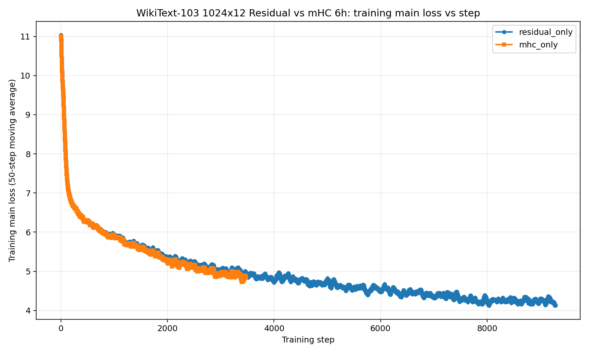
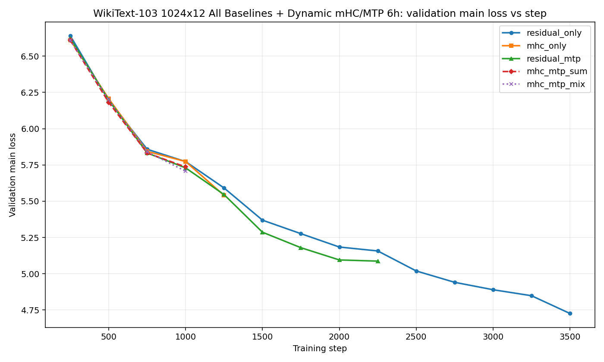

Research Project
Hyperconnections and Multi-Token Prediction
An experiment plan exploring whether hyperconnections can help models specialize under multi-token prediction objectives.
I started an experiment to see if hyperconnections synergize well with multi token prediction objectives. My inspiration comes from the intuition that hyperconnections are well suited to deal with the dynamics that multi token prediction introduces. Specifically, I hypothesize that the hyperconnections may allow certain streams and certain regions of the model to specialize in predicting certain tokens.
Experimental Design
I implemented a multi token prediction objective on top of a transformer model with hyperconnections. I compared the performance of this model against a hyperconnection model with a standard next token prediction model, a standard residual model with multi token prediction, and a standard residual model with next token prediction.First Lessons
My first runs reported significantly poorer performance for both multi token prediction and manifold hyper connections, with the combination adding the performance losses. I realized I needed to properly optimize the implementation of these techniques to get the performance reported in the literature.
The first step was fixing bugs in the multi token prediction training, and setting the sinkhorn iterations to 20 instead of 5 for manifold hyper connections. This allows for a more accurate doubly stochastic matrix, which empirically is very important for stability.
Once finishing this, the multi token prediction started to outperform the residual baseline, however the MHC technique only matched the residual network on a per token basis and underperformed on a wall clock basis.
I found that scaling the model up to 250M parameters gave it an insignificant boost over the residual network per token, but still worse performance by time due to inefficiencies. However, I also found that the MHC learned mixer is essentially near identity. So it is not effectively learning to use the parallel residual streams.
To fix this, I did some more looking into the implementation details from the literature. I changed the mHC path from a static context independent transformation to a dynamic input dependent transfornation.
H_pre = sigmoid(alpha_pre * phi_pre(norm(vec(streams))) + b_pre)
H_post = 2 * sigmoid(alpha_post * phi_post(norm(vec(streams))) + b_post)
H_res = Sinkhorn(exp(alpha_res * phi_res(norm(vec(streams))) + b_res))
This resulted in better per step performance, and now diverges significantly from a simple identity mixer of residual streams.

Revisiting the Experiment
I decided to rerun the experiment, comparing MHC plus MTP with baselines, and found results closer to my initial expectations, with the efficiency gains of MHC and MTP appearing to simply add together. There is no real phase shift in performance that I saw from MHC unlocking MTP abilities. The update to my understanding from this experiment is that neural networks are pretty good at finding a way to make things work with new architectural changes, and that performance gains from independent directions of architectural fine tuning tend to simply add together.

Current Work
There is another direction I wish to take this personal research project -which is tuning the underlying code and kernels to make MHC and MTP run as efficiently as standard residual networks. I noticed that performance versus wall clock time was lower for both of these, due to them running much slower than the simple residual network. Indeed MHC ran at about half the speed as the residual baseline, so despite being marginally more efficient on a per token basis, on a fixed compute budget, it still has worse performance. I will be going through the “How to Scale Your Models” tutorials and come back and write custom kernels to speed up MHC and MTP to the residual baseline.